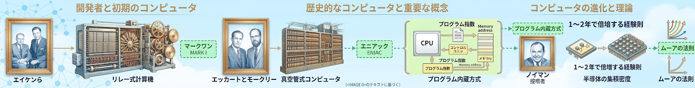

スマートフォン、パソコン、ゲーム機、家電――どれもコンピュータが入っています。
この単元では、コンピュータの歴史としくみ、数字の表し方である2進数、そして文字・音・画像をコンピュータが扱うディジタル化を学びます。高認大問4の中心領域です。
今、手のひらに乗るスマホには、月面着陸を成功させたアポロ計画のコンピュータより何百万倍も強い計算能力があります。
コンピュータはどうやってここまで進化したのでしょうか？ 歴史を知ると、現在のコンピュータの仕組みも自然に理解できます。

| 名称・人物 | 年代 | 特徴 |
|---|---|---|
| MARK I（マーク・ワン） | 1944年 | エイケンらが開発したリレー式計算機。歯車とリレー（電磁スイッチ）で動作する大型機械 |
| ENIAC（エニアック） | 1946年 | エッカートとモークリーが開発した真空管式コンピュータ。世界初の汎用電子計算機の一つ |
| ノイマン | 1945年提唱 | プログラム内蔵方式を提唱。現代のコンピュータの基本設計 |
は、プログラムをメモリ（記憶装置）に格納して、CPUがそれを順に読み出して実行する方式です。現代のコンピュータはほぼすべてこの方式で動いています。
| 項目 | 内容 |
|---|---|
| 提唱者 | ジョン・フォン・ノイマン（1945年） |
| 仕組み | プログラムとデータを同じメモリに格納し、CPUが順番に読んで実行 |
| メリット | プログラムを変えるだけで違う処理ができる（汎用性） |
は、半導体の集積密度が1〜2年で倍になるという経験則です。インテル社の創業者の一人ゴードン・ムーアが1965年に提唱しました。
1〜2年で倍々になる → 10年で約32倍 → 20年で約1000倍
この法則のおかげで、コンピュータは毎年どんどん高性能・小型・安価になっています。スマホがアポロ計画のコンピュータより高性能なのも、この法則の結果です。
※ 世界初の電子計算機の一つは である。プログラムをメモリに格納し、順に実行する方式を といい、提唱者は である。
パソコンは「キーボード」「マウス」「ディスプレイ」「本体」と複数の部分でできています。それぞれに役割があり、5つの基本機能に分類できます。
また、目に見える機械の部分（ハードウェア）と、その中で動くプログラムの部分（ソフトウェア）の区別も大事です。
| 【ハードウェア】 | 【ソフトウェア】 |
|---|---|
|
機械の部分（目に見える） パソコン本体・キーボード・ マウス・モニター・プリンター |
プログラムの部分（目に見えない） OS・ブラウザ・Word・ ゲームアプリ |
ハードウェア＝硬いもの（触れる物体）
ソフトウェア＝柔らかいもの（実体のないプログラム）
パソコン本体やキーボードは「触れる」、Wordやゲームは「触れない」と覚えると分かりやすいです。
コンピュータは、機能ごとに5つの装置に分けられます。これを5大装置といい、高認では必出です。
| 装置 | 役割 | 具体例 |
|---|---|---|
| 制御装置 | 全体の動きを指揮する | CPUの一部（CU：Control Unit） |
| 演算装置 | 計算を行う | CPUの一部（ALU：Arithmetic Logic Unit） |
| 記憶装置 | データやプログラムを保存する | メモリ・HDD・SSD・USBメモリ |
| 入力装置 | 外部からデータを取り込む | キーボード・マウス・タッチパネル |
| 出力装置 | 処理結果を外に出す | ディスプレイ・プリンター・スピーカー |
制御 → 演算 → 記憶 → 入力 → 出力
頭文字を取って「せい・えん・き・にゅう・しゅつ」と何度も声に出すと、自然に5つが言えるようになります。
制御と演算はCPU（中央処理装置）の中にあり、これらが「コンピュータの頭脳」です。
（Central Processing Unit：中央処理装置）は、制御装置と演算装置を1つにまとめたもので、コンピュータの脳みそにあたります。プログラムの命令を1つずつ読み取り、計算したり、他の装置に指示を出したりします。
| 性能を決める要素 | 内容 |
|---|---|
| クロック周波数（GHz） | 1秒間に何回処理できるかを示す数値。大きいほど高速。3GHzなら1秒に30億回処理 |
| コア数 | CPU内の「脳みそ」の数。多いほど同時処理可能。4コアなら4つの脳みそ |
記憶装置には2種類あります。試験ではしっかり区別を問われます。
作業中の主役のデータを置くのが主記憶。補助でしまっておくのが補助記憶。
「主記憶＝メモリ」「補助記憶＝ストレージ（SSD・HDD）」と覚えるのも便利です。
| 用語 | 意味 |
|---|---|
| RAM | Random Access Memory。主記憶装置（メモリ）のこと。電源を切るとデータが消える（揮発性） |
| HDD | Hard Disk Drive。磁性体を塗った円盤を回転させて読み書きする。容量大だがSSDより遅い |
| SSD | Solid State Drive。可動部品なしの半導体メモリを使う。HDDより高速で衝撃に強い |
| USB | Universal Serial Bus。さまざまな機器をパソコンに接続するための共通規格 |
プログラムが実行される流れは、次の4ステップで無限にくり返されます。
（オペレーティングシステム）は、応用ソフトと周辺機器を仲介する基本ソフトウェアです。WindowsやmacOSが代表例です。
| 【GUI】 | 【CUI】 |
|---|---|
|
Graphical User Interface アイコンとマウスで操作 誰でも使いやすい |
Character User Interface 文字列で命令を入力 専門家・サーバー管理向け |
| 例：Windows・macOS・スマホの画面 | 例：コマンドプロンプト・ターミナル |
※ コンピュータの機械部分を 、 プログラム部分を という。アイコンとマウスで操作する画面方式を という。
コンピュータの中は、電気が「流れる／流れない」の2つの状態しかありません。これを0と1で表すと、すべての情報が表現できます。
この「0と1だけで数を表す方法」を2進数といいます。
2進数を学ぶ前に、まずは私たちが普段使っている10進数のしくみを思い出しましょう。
例えば「347」という数。これは実は「位ごとの重み」でできています。
10進数では、位が1つ左に進むごとに重みが10倍になります。
一の位 → 十の位 → 百の位 → 千の位 ... と、1・10・100・1000・10000... という具合です。
これが「10進数」と呼ばれる理由です。
2進数も同じしくみです。でも違うのは、使える数字が「0」と「1」の2種類だけ。そして、位が1つ進むと重みが2倍になります。
コンピュータの中は電気の「流れる／流れない」の2状態だけで動いています。
・電気が流れる → 1
・電気が流れない → 0
だから、自然と2進数が使われるのです。
0から順に並べてみましょう。2進数は0と1を使い切ったら、次の桁に繰り上がります。
| 10進数 | 2進数 | 読み方のコツ |
|---|---|---|
| 0 | 0 | そのまま |
| 1 | 1 | そのまま |
| 2 | 10 | 2は「1の位」では表せない → 桁上がり！ |
| 3 | 11 | 2 + 1 = 10 + 1 |
| 4 | 100 | また桁上がり！（4の位に1） |
| 5 | 101 | 4 + 1 |
| 6 | 110 | 4 + 2 |
| 7 | 111 | 4 + 2 + 1 |
| 8 | 1000 | また桁上がり！（8の位に1） |
| 10 | 1010 | 8 + 2 |
2進数の「10」は、10進数の「じゅう」ではなく「に」です！
読むときは「イチゼロ」と1桁ずつ読みます。
・2進数の「10」→ イチゼロ → 10進数の「2」
・2進数の「11」→ イチイチ → 10進数の「3」
変換のしかたはたった3ステップです。
STEP 1：右から順に、重み（1・2・4・8・16・32・64・128...）を書く
STEP 2：2進数の各桁と重みをかける
STEP 3：全部足す
STEP 1：右から順に「2のn乗の位」と重みを書きます
| 2進数 | 1 | 1 | 0 | 1 |
|---|---|---|---|---|
| 位の名前 | 2³の位 | 2²の位 | 2¹の位 | 2⁰の位 |
| 重み | 8 | 4 | 2 | 1 |
STEP 2 & 3：各桁と重みをかけて足します
答え：2進数「1101」＝ 10進数「13」
5桁になっても同じです。右から1・2・4・8・16...と重みを書いていきます。
| 2進数 | 1 | 0 | 1 | 0 | 1 |
|---|---|---|---|---|---|
| 位の名前 | 2⁴の位 | 2³の位 | 2²の位 | 2¹の位 | 2⁰の位 |
| 重み | 16 | 8 | 4 | 2 | 1 |
答え：2進数「10101」＝ 10進数「21」
1 ・ 2 ・ 4 ・ 8 ・ 16 ・ 32 ・ 64 ・ 128 ・ 256
この数列を覚えておくと、変換がスムーズになります。「1から始めて、2倍ずつ」と覚えましょう。
逆向きの変換も大事です。「2で割って余りを書く」を繰り返します。
2で割り続けて、余りを書く方法です。
| わり算 | 商 | 余り |
|---|---|---|
| 13 ÷ 2 | 6 | 1 |
| 6 ÷ 2 | 3 | 0 |
| 3 ÷ 2 | 1 | 1 |
| 1 ÷ 2 | 0 | 1 |
答え：10進数「13」＝ 2進数「1101」
※ 例題1で「1101 → 13」だったので、これで往復できることが確認できます！
| わり算 | 商 | 余り |
|---|---|---|
| 25 ÷ 2 | 12 | 1 |
| 12 ÷ 2 | 6 | 0 |
| 6 ÷ 2 | 3 | 0 |
| 3 ÷ 2 | 1 | 1 |
| 1 ÷ 2 | 0 | 1 |
答え：10進数「25」＝ 2進数「11001」
※ 検算：1×16 + 1×8 + 0×4 + 0×2 + 1×1 = 16+8+1 = 25 ✓
下の練習問題で力を試しましょう。答えはクリックすると表示されます。
問1. 2進数「110」を10進数にしましょう。
問2. 2進数「1001」を10進数にしましょう。
問3. 2進数「1111」を10進数にしましょう。
問4. 2進数「11010」を10進数にしましょう。
問5. 10進数「5」を2進数にしましょう。
問6. 10進数「12」を2進数にしましょう。
問7. 10進数「20」を2進数にしましょう。
は2進数の1桁分の情報量です。 は8ビットをまとめた単位です。
| 単位 | 大きさ | 表現できる数 |
|---|---|---|
| 1ビット | 2進数の1桁 | 2通り（0, 1） |
| 2ビット | 2進数の2桁 | 4通り（00, 01, 10, 11） |
| 3ビット | 2進数の3桁 | 8通り（000〜111） |
| 4ビット | 2進数の4桁 | 16通り（0000〜1111） |
| 1バイト | 8ビット | 256通り（2の8乗） |
ビットが1つ増えると、表現できる数は2倍になります。
・1ビット → 2通り（2の1乗）
・2ビット → 4通り（2の2乗）
・3ビット → 8通り（2の3乗）
・8ビット（1バイト） → 256通り（2の8乗）
8ビットで256通り。これでアルファベット・記号・数字を全部表せます。
| 単位 | 大きさ | 例（おおよそ） |
|---|---|---|
| 1KB（キロバイト） | 約1,000バイト | 短い文章 |
| 1MB（メガバイト） | 約1,000KB | 写真1枚、3分の音楽 |
| 1GB（ギガバイト） | 約1,000MB | 映画1本、写真数百枚 |
| 1TB（テラバイト） | 約1,000GB | 映画数百本、写真数十万枚 |
※ 0と1の2つの数字だけで数を表す方法を という。2進数1桁分の情報量を といい、8ビットをまとめた単位を という。
コンピュータは「0と1」しか分かりません。それなのにLINEで日本語の文字が送れて、Spotifyで音楽が聴けて、Instagramで写真が見られるのは、すべて「0と1の列」に変換する仕組みがあるからです。
この変換のことをディジタル化といいます。これから10個のテーマで、ディジタル化のしくみをじっくり見ていきます。
わたしたちの身の回りには、温度や音の強さ、光の明るさのように連続的に変化する量がたくさんあります。これを表現する方法には2種類あります。
アナログとは、温度や音の強さなどの連続的な量を、針の位置や水銀柱の長さ、電圧の高さなどの連続的な量で表現することです。
これに対しディジタルでは、連続的に変化する量を、一定の間隔で区切り、とびとびの数値で表現します。例:最小単位0.1℃のディジタル温度計では、22.6℃の次は22.7℃で、22.64℃という温度は表現できません。
身近な例では、アナログ時計は針の位置が連続的に動きますが、ディジタル時計は「12:34」のように1分ごとにカチッと切り替わります。
ディジタル画像には大きく分けて2つの形式があります。それぞれ得意なことがちがうので、使い分けが大切です。
ペイント系ソフトウェアは画像を画素(ピクセル)と呼ばれる点の集まりとして表現します。この画像形式をラスタ形式(ラスタグラフィックス)といいます。
ペイント系は、写真の加工(コントラスト調整、モザイク、ネガなど)に向いていますが、拡大するとジャギー(ギザギザ)が目立ちます。代表ソフトは Adobe Photoshop です。
ドロー系ソフトウェアは画像を、基準点からの座標や角度、太さなどの数値で表現します。この画像形式をベクタ形式(ベクタグラフィックス)といいます。
ドロー系は倍率に合わせて作画し直すため、拡大してもジャギーが生じません。ロゴやイラストの作成に適しています。代表ソフトは Adobe Illustrator です。
レイヤーとトリミング:レイヤー(層)を重ねて1枚の画像を合成できます。トリミングは画像から不要な部分を取り除く処理です。
文字や記号も0と1の組み合わせで表現できます。「どの数字をどの文字に対応させるか」を決めたものを文字コードと呼びます。
文字コードのバイト数
主な文字コード
制御コード:文字コードのうち(00)₁₆〜(1F)₁₆および(7F)₁₆の部分は、文字の表示や周辺機器を制御するための特殊なコードが割り当てられています。例:改行を表すコード(0D)₁₆と(0A)₁₆。
音は空気の振動が伝わる波で、連続的に変化するアナログです。これをコンピュータで扱えるディジタルに変換する3ステップ「標本化→量子化→符号化」を学びましょう。
3つのステップ
① 標本化(サンプリング):横軸(時間)を一定の時間間隔で区切り、その時間ごとに音の振れの値を取り出します。区切る時間間隔を標本化周期、その逆数(1秒間に標本化する回数)を標本化周波数といい、単位はHz。
② 量子化:縦軸(電圧)を一定の間隔で区切って段階値を決め、標本化した点を最も近い段階値にそろえます。段階数を決めるのが量子化ビット数(nビット → 2ⁿ段階)。
③ 符号化:量子化した値を2進数で表現することです。音などの情報を2進数の符号に変換する方式をPCM(パルス符号変調)といいます。
標本化周波数と量子化ビット数の関係:両方とも値が大きいほどもとの波形に近くなりますが、データ量も増えます。
テレビやコンピュータのディスプレイは、赤・緑・青の光を組み合わせてさまざまな色を表現しています。これを光の三原色といいます。
光の三原色はR(Red:赤)・G(Green:緑)・B(Blue:青)の3色です。これらを混ぜると明るさが増し、白に近づくことを加法混色といいます。
2階調(各色1ビット:0=非発光、1=発光)で表すと8色
| 色 | R | G | B |
|---|---|---|---|
| 黒(K) | 0 | 0 | 0 |
| 青 | 0 | 0 | 1 |
| 緑 | 0 | 1 | 0 |
| シアン | 0 | 1 | 1 |
| 赤 | 1 | 0 | 0 |
| マゼンタ | 1 | 0 | 1 |
| イエロー | 1 | 1 | 0 |
| 白(W) | 1 | 1 | 1 |
256段階(各色8ビット)で表すと約1677万色:256×256×256 = 256³ = 2²⁴ = 16,777,216通り。これを24ビットフルカラーといいます。
RGB値の例:赤=(255,0,0) / 黄=(255,255,0) / 白=(255,255,255) / 黒=(0,0,0)
「K」は key plate(印刷の輪郭線用の版)の頭文字に由来します。BlackのBではないことに注意!
カラー印刷機やプリンタは、シアン・マゼンタ・イエローの3色の組み合わせでさまざまな色を表現します。これを色の三原色といいます。
色の三原色はC(Cyan:シアン)・M(Magenta:マゼンタ)・Y(Yellow:イエロー)の3色です。混ぜると暗くなり、黒に近づくことを減法混色といいます。
CMYのインクだけでは正確な黒を出せないため、黒色(K)を加えた4色(CMYK)で印刷します。
RGB と CMY の対応(補色関係):光の三原色のうち1つだけ抜けると、色の三原色の色になります。
身近な例:カラープリンタのインクカートリッジを見るとC・M・Y・Kの4色が入っています。テレビやスマホのディスプレイは光なのでR・G・Bを使います。
画像も0と1の組み合わせで表現できます。前節で学んだ色のディジタル表現を使って、画像をどのようにディジタル化するか見てみましょう。
画素(ピクセル)はR・G・Bの3つの部分をまとめた、画像の最小単位です。解像度は画素の細かさのことで、高いほどなめらかな画像になります。
画面解像度:ディスプレイ上の1インチ(約2.5cm)あたりの画素数で、単位はppi(pixels per inch)。
階調は光の明るさが変化する段階数のこと。R・G・Bそれぞれが256段階の場合「256階調」と呼びます。
音と画像の標本化のちがい:
画像や音声は情報量が大きく、そのままでは保存や送信に時間がかかります。データの中身を保ったままサイズを小さくする「圧縮」という技術を学びましょう。
圧縮とは、データのもつ情報を保ったままサイズを小さくする処理。伸張(解凍)で元に戻します。
2種類の圧縮
主なファイル形式
主な圧縮方法
圧縮率 = 圧縮後÷圧縮前×100[%]。値が小さいほど高圧縮。
動画は静止画(フレーム)を高速で連続表示することで実現しています。これは人間の目の残像現象を利用したもの。仕組みを理解しましょう。
フレームは動画を構成する1枚1枚の静止画のこと。「枠」「コマ」の意味です。
フレームレート(fps)は1秒間に表示されるフレーム数。fps = frames per second の略。値が大きいほどなめらかな動画になります。
フレームレートの目安
計算例:30fps で5秒間のアニメ → 30×5 = 150フレーム必要
3DCG(三次元コンピュータグラフィックス):平面のディスプレイに立体的に表現する技術。次のような工夫で立体感を出します。
立体視の仕組み:左右の目の位置の違いによる視差を使い、左目用と右目用の異なる映像を脳で合成して立体感を得ます。
これまで学んだ内容を使って、よく出る計算パターンを整理します。「単位を統一する」「式を立ててから計算する」ことを意識すれば必ず解けます。
①静止画のデータ量:画素数 × 1画素あたりのバイト数
②音声のデータ量(1秒分):量子化ビット数 × 標本化周波数 × チャンネル数
③動画のデータ量:1フレームあたり × フレーム数(=fps×秒数)
④通信速度:データ量÷時間。単位はbps(bits per second)。
⑤パケット通信料:
プリンタの解像度:単位はdpi(dots per inch)。1画素=数ドットで構成されます。
| 出題パターン | 問われ方の例 | 答えの出し方 |
|---|---|---|
| 人物・年代 | 「プログラム内蔵方式の提唱者は？」 | → ノイマン |
| 用語 | 「半導体の集積密度の法則は？」 | → ムーアの法則 |
| 5大装置 | 「制御・演算・記憶・入力・出力」 | → 5つを全部言える |
| 区別 | 「ハードとソフトの違いは？」 | → 機械かプログラムか |
| 2進数計算 | 「1011を10進数にすると？」 | → 11（重みを掛けて足す） |
| 単位 | 「1バイトは何通りを表せる？」 | → 256通り（2の8乗） |
ENIAC／ノイマン／プログラム内蔵方式／ムーアの法則／
ハードウェア／ソフトウェア／5大装置／CPU／OS／GUI／CUI／
2進数／ビット／バイト／KB／MB／GB／TB
① 発達史＝MARK I → ENIAC → ノイマン型 → ムーアの法則
② 構成＝ハード（機械）／ソフト（プログラム）／5大装置／OS／GUI・CUI
③ 2進数＝0と1で表す／ビット・バイト／1バイト＝256通り
④ 容量＝KB→MB→GB→TBの順に1000倍ずつ
これらが言えれば、高認大問4の半分は得点できます。